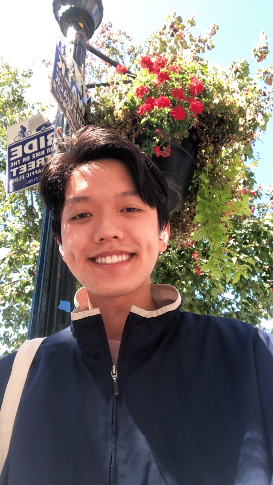

Andrew Tran
Computer Science Major | 5th year
Hey! I’m Andrew, a 5th year CS major from San Jose, and I love dogs!
When I’m not struggling to get my life together, I enjoy playing smash, watching anime, and baking with friends.
If you see me on campus, let's chat!
My favorite eats in Berkeley
- Sliver Pizzeria
- Toss Noodle Bar
- La Note

Trust me
-
I learned that it's possible to develop one's eye for design;
previously, I had believed that certain individuals were simply born with talent in this field.
I learned that one of the best ways to develop a design eye is to adapt the mindset of an existing product designer.
-
My favorite part of the article was definitely the "Breaking down the app" section.
Here, I was able to examine the choices that professional designers made to build components and reflect good design principles in well-known apps.
-
"When I started off in design, I sucked." Relatable.
-
10/10, would read again :)